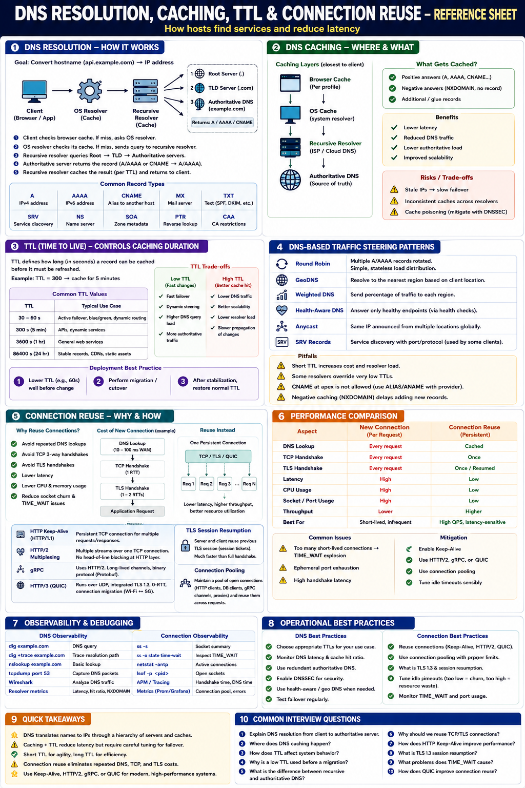

How every request finds its destination — and how to avoid paying for it twice
The Big Picture
Every request starts with finding the service (DNS) then connecting to it (TCP/TLS). Without optimization, these two phases easily add 100–300 ms of avoidable latency per request. Every cache hit saves a network round trip.
DNS Resolution — Step by Step
Browser Cache
Checks local browser DNS cache. Hit → immediate, 0ms.
OS Resolver Cache
Checks OS DNS cache (systemd-resolved, Windows DNS Client, macOS resolver).
Recursive Resolver
Queries ISP / Google 8.8.8.8 / Cloudflare 1.1.1.1 / Route 53. Resolver does the work on the client's behalf.
Root Server
"Where is .com?" → returns TLD name servers.
TLD Server
"Where is example.com?" → returns authoritative name servers.
Authoritative DNS
Source of truth. Returns the A/AAAA record (IP). Resolver caches and returns to client.
Full recursive resolution costs 3–4 UDP round trips and can take 50–200ms. Every cache layer eliminates this cost.
DNS Record Types
| Record | Purpose |
|---|---|
| A | IPv4 address |
| AAAA | IPv6 address |
| CNAME | Alias to another hostname (chain) |
| MX | Mail server |
| TXT | SPF, DKIM, domain verification |
| NS | Name servers for this domain |
| SRV | Service discovery (host + port) |
| PTR | Reverse DNS lookup (IP → hostname) |
TTL — Time To Live
TTL controls how long a DNS record can be cached before requiring a fresh lookup:
| TTL Value | Use Case |
|---|---|
| 30–60 seconds | Active failover, blue/green deployments, canary releases |
| 300 seconds (5 min) | APIs, dynamic services |
| 3600 seconds (1 hr) | General web services |
| 86400 seconds (1 day) | Stable records, static assets |
Low TTL
High TTL
Migration best practice: Lower TTL to 60s well before a deployment. After migration stabilizes, restore to normal TTL. Clients stuck on old TTL will continue using stale IPs for up to the previous TTL duration.
DNS-Based Traffic Steering
| Strategy | Description |
|---|---|
| Round Robin | Rotate through multiple IPs per response |
| GeoDNS | Return IP of nearest region based on client location |
| Weighted DNS | Send % of traffic to each region (canary, blue/green) |
| Health-Aware DNS | Exclude unhealthy endpoints from responses |
| Anycast | Same IP announced from multiple global PoPs — routing finds nearest |
Connection Reuse — Why It Matters
Creating a new connection for every request wastes time and CPU:
Without Reuse (per request)
With Connection Reuse
Connection Reuse Strategies
HTTP Keep-Alive (HTTP/1.1)
Keeps TCP connection open between requests. Reduces per-request overhead from 3 handshakes to 0.
HTTP/2 Multiplexed Streams
Many concurrent requests over a single connection. One TCP+TLS handshake for all streams.
gRPC Long-Lived Channels
HTTP/2 connections kept alive for many RPCs. Eliminates handshake overhead for microservice communication.
TLS Session Resumption
Resume a previous TLS session instead of full handshake. TLS 1.3 enables 0-RTT for eligible repeat requests.
Connection Pooling
Application maintains a pool of open connections (HTTP clients, DB clients, NGINX upstream pools). Workers pick from the pool instead of opening new connections.
QUIC Connection Migration
Connection persists across network changes (Wi-Fi → 5G). Uses connection ID, not IP+port tuple. Ideal for mobile.
Common Operational Issues
TIME_WAIT Explosion
Many short-lived TCP connections leave sockets in TIME_WAIT (~60s). Can exhaust ephemeral ports, increase memory, and hurt performance. Fix: use connection pooling + Keep-Alive.
Ephemeral Port Exhaustion
Clients have ~28,000 available outbound ports. Opening many short-lived connections exhausts this range. Fix: reuse connections; tune ip_local_port_range.
Stale DNS After Deployment
Clients continue using old IPs after a migration because TTL was too high. Fix: lower TTL 24h before deployment.
Missing Connection Pool Tuning
Pool too small → queue builds up. Pool too large → DB connection limit hit. Fix: size pool to match downstream concurrency limits.
System Design Applications
| Design Problem | Apply |
|---|---|
| Global CDN | GeoDNS + Anycast + low TTL for failover |
| Multi-region APIs | DNS failover + weighted routing |
| Microservices | Internal DNS + long-lived gRPC channels |
| Mobile Backend | QUIC + connection migration |
| API Gateway | Connection pooling + TLS session resumption |
| Database Proxy | Connection pool + replica discovery via DNS SRV |
| Blue/Green Deployment | Lower TTL before cutover → swap → restore TTL |
| High-QPS REST API | HTTP/2 Keep-Alive + TLS session reuse |
Observability & Debugging
DNS Tools
| Tool | Purpose |
|---|---|
dig api.example.com | Query DNS records + TTL |
dig +trace | Trace full recursive resolution |
nslookup | Quick DNS lookup |
tcpdump port 53 | Capture DNS UDP packets |
Connection Tools
| Tool | Purpose |
|---|---|
ss -s | Socket state summary |
ss -o state TIME-WAIT | Count TIME_WAIT sockets |
netstat -tn | Active TCP connections |
lsof -i | Open socket file descriptors |
Staff Engineer Thinking
Junior
DNS converts names to IPs
Senior
Use low TTL for fast failover
Staff asks
Key Takeaways
